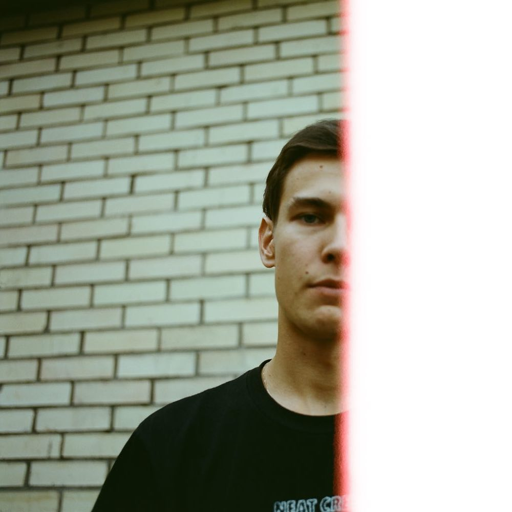

Anton Radionov, a designer working on websites and applications, as well as design systems and brand identities. If you'd like to talk, just send me an email.
Reviewing values, looking for sustainability.
Thanks to the internet our opportunities are endless now. Individuals can choose whatever they want without considering any consequences. Proceeding with the next thing quickly and looking only forward. Great for business, but not so good for people...
Information is flooding and it's tough to filter what's important. Especially in design, where, in reality, there is no right way of doing things, work will never be completed, and evaluation is a biased process. No one will argue with the statement that design is important, designers did a great job to be heard. Unfortunately, it gets adopted as a tool to increase sales and product value, not to design products for good! How else we got to 85% of websites being unable to choose text color?
Sustainability becomes a more and more used term in regards to the internet. Primarily it leads to environmental and sociological issues. From a design perspective, it unifies usability, accessibility, privacy, ethics, etc. under one roof to serve a greater good. Basically, everything that's raising the bottom line and increases product lifetime. If we'd strip out product to the minimum elements, how it'd look? That would be text, color, and space. Actually, that's enough for users, they don't need more, all they want is to complete the job (obviously I'm not working in the entertainment market) and leave. The rest is purely business desires which should be balanced out.
To address at least some of the issues I'll keep focusing on and exploring what actually matters. Review every decision I make and strive for the ultimate use of available resources. Good design is invisible design, right?
P.S. This is the beginning of me writing journal and exploring various topics.